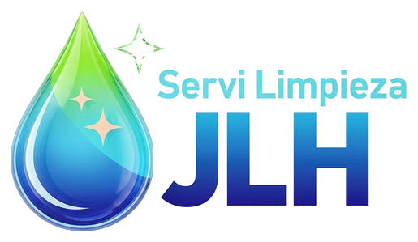

Sitio en mantenimientoEstamos mejorando nuestro sitio
ServiLimpieza JLH está en mantenimiento por un momento. Volveremos muy pronto con mejoras para ti.
Gracias por tu paciencia. 💧

Sitio en mantenimientoServiLimpieza JLH está en mantenimiento por un momento. Volveremos muy pronto con mejoras para ti.